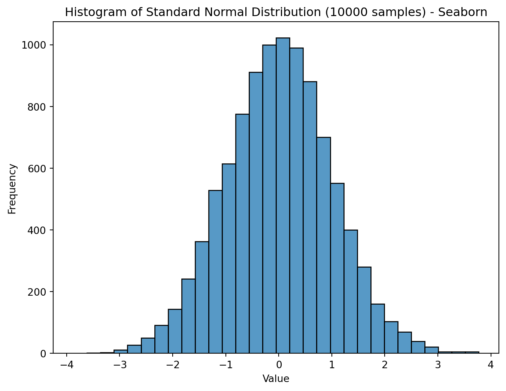
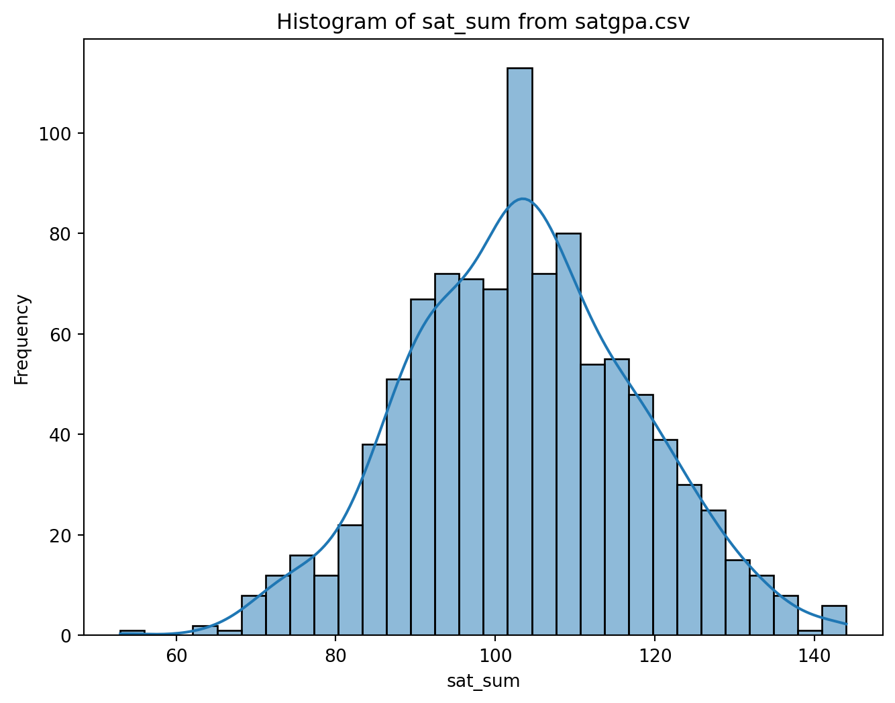
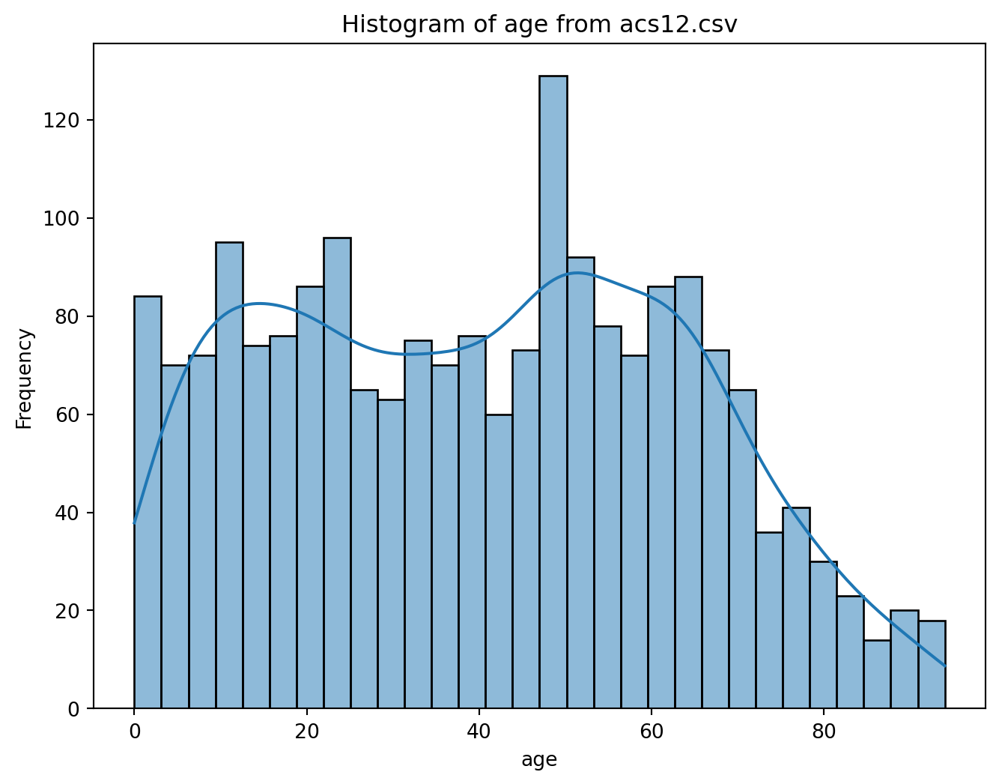
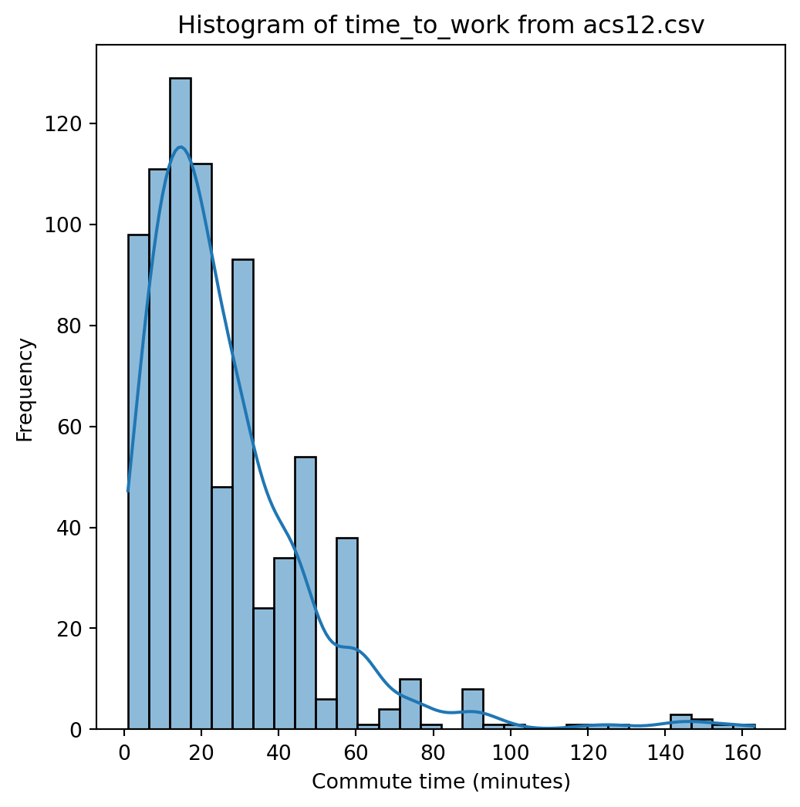

18-19. The Normal Distribution
Preparatory work
Read: OpenIntro Statistics Section 4.1
The Normal Distribution (bell curve)
Normal Distribution is:
- Shaped like a bell
- Unimodal
- Symmetric
- Unskewedx
The Normal Distribution is everywhere


Plenty of data distributions are not normal


The Family of Normal Distributions
viewof mu = Inputs.range([-5, 5], {
value: 0,
step: 0.1,
label: "μ:",
width: 250
})
viewof sigma = Inputs.range([0.1, 3], {
value: 1,
step: 0.1,
label: "σ:",
width: 250
})
// 2. Dynamic Notation Display
// This updates instantly whenever the sliders move
md`### Distribution: N(${mu.toFixed(1)}, ${(sigma**2).toFixed(2)})`Plot.plot({
height: 400,
grid: true,
y: { domain: [0, 1], label: "Density" },
x: { domain: [-10, 10], label: "Value" },
marks: [
// The Normal Curve
Plot.lineY(d3.range(-10, 10, 0.05), {
x: x => x,
y: x => (1 / (sigma * Math.sqrt(2 * Math.PI))) * Math.exp(-0.5 * Math.pow((x - mu) / sigma, 2)),
stroke: "#2c3e50",
strokeWidth: 3
}),
// A dashed vertical line at the mean to help visualize shift
Plot.ruleX([mu], {stroke: "red", strokeDasharray: "4,4", opacity: 0.5})
]
})The notation \(N(\mu, \sigma^2)\) refers to a normal distribution while telling its mean \(\mu\) and its standard deviation \(\sigma\). What kind of normal distribution is \(N(100,16)\)?
Reading the bell curve

Cholesterol Level Histograms. Source: Slhessarenko, N., Jacob, C.M., Azevedo, R.S. et al. Serum lipids in Brazilian children and adolescents: determining their reference intervals. BMC Public Health 15, 18 (2015). https://doi.org/10.1186/s12889-015-1359-4. Open access article.
- What is a typical cholesterol for a six year old?
- What portion of kids age 1-8 have cholesterol between 60 and 120?
- How unusual is a cholesterol of 160, for a kid aged 1-8?
- Do kids age 1-8 have more, less, or about the same cholesterol, compared to kids 9-12?
Technical definition, for the record
Technically, normal is not just unimodal, symmetric, unskewed, and bell shaped. A normal distribution fits the specific formula below. Lucky for us, we don’t need to use or memorize the formula in Math 125!
\[f(x) = \frac{1}{\sqrt{2\pi\sigma^2}} e^{-\frac{(x - \mu)^2}{2\sigma^2}}\]
Central Limit Theorem
When should we expect a distribution to be normal?
If a data variable aggregates many small independent effects, it’s usually normal or close. For example:
- Human height (arguably)
- Exam scores (usually)
- Cholesterol levels (usually)
- Game scores in sports (basketball more than hockey!)
- Sampling distributions (This is foreshadowing. More on this later!)
This phenomenon is called the Central Limit Theorem. Its precise statement is too technical for Math 125.
Which are probably normal (or close)?
- The widths of 2x4 lumber at Lowes.
- The amount of liquid in coffee beverages served at Tim Hortons.
- The weights of pets in Potsdam.
- SAT scores of Potsdam High School graduates.
- The lengths of days (throughout the year) in Potsdam.
- The results of overlapping political polls, all taken at the same time and place (but polling different people).
The empirical rule (68-95-99.7)
- Within one standard deviation from the mean lies 68% of the data.
- Within two standard deviations from the mean lies 95%.
- Within three standard deviations from the mean lies 99.7% …approximately.

count 783.000000
mean 25.997446
std 22.290973
min 1.000000
25% 10.000000
50% 20.000000
75% 30.000000
max 163.000000
Name: time_to_work, dtype: float64In range \((26 - 2*22.3, 25+2*22.3)\): 96% of data points.
The empirical rule (68-95-99.7)

Percentiles and tail areas
- A distribution is \(N(100,10^2)\). How much data should be expected above 120?
- A distribution is \(N(60, 2^2)\). How much data should be expected below 54?
- A distribution is \(N(10, 5^2)\). How much data should be expected above 16? (Why can’t this last problem be solved the same way?)
Ways to calculate tail areas and percentiles
- Geometrically, using empirical rule (for \(\pm 1, 2, 3\) only!)
- Using a graphical tool, like Bognar’s normal CDF calculator
- Using Jupyter:
- Using a Z-table (old school, not in this course).
So, is that a lot then? (Z-score)
A certain pet parrot’s body temperature is 107°.
What more would you need to know, before judging whether the body temperature is a health concern?
So, is that a lot then? (Z-score)
A certain pet parrot’s body temperature is 107°.
The average body temperature for the species is 105°. Of course, the parrot is 2° warmer than average.
What other general stats about parrots and their temperatures would be useful to contextualize this information?
So, is that a lot then? (Z-score)
A certain pet parrot’s body temperature is 107°.
The average body temperature for the species is 105°. Of course, the parrot is 2° warmer than average.
The standard deviation of body temp is 1.4°. The parrot is warm by about one and a half standard deviations.
Is the bird’s temperature normal, somewhat high, or very high? Why?
A fair rating – data in context
Judge relative to average – subtract \(\mu\).
Judge relative to variability – divide by \(\sigma\).
\[\text{Z-score} = \frac{\text{data value} - \mu}{\sigma}\]
Z-score = number of standard deviations from the mean.
Z-score is an interchangeable standard of unusualness, scaled to the distribution the data belongs to.
Intuition for Z-scores
It counts the number of standard deviations from the mean, which is a statistically “fair” across different distributions.
- Z = 0: Average.
- Z = +1, -1: Uninteresting.
- Z = +2, -2: Raise eyebrow.
- Z = +3, -3: Remarkable.
- Z = +5, -5: Stunning.
Practice with Z score
- A distribution for test scores is normally distributed \(N(500, 50^2)\). You score 625. Well done! What is your Z score?
- An LED manufacture process produces units with illumination \(N(50,0.2^2)\). One particular bulb has illumination 49.4.
- What is its Z-score?
- If we reject any bulb at 49.4 or below, how much of the inventory would we waste?
- By reconfiguring the assembly process, we can make the distribution \(N(51, 1^2)\). How would you describe the effect of this change? How would this affect the manufacturing waste?
The rarity of a Z-score: the p-value
A good measure of the unusualness of a Z-score is the portion of the curve at least as extreme as that score, called the \(p\)-value.
Use Bognar’s tool to answer:
- How much of the normal distribution is above Z = 2.3?
- How much of the normal distribution is more extreme, on either side, than Z=3.1?
Use stats.norm.cdf to answer:
- How much of the normal distribution is below Z = -5?
- How much of the normal distribution is above Z = 2.5?
Putting it all together
- Most people tend to score about 550 on a given exam, with a standard deviation of 60. Your score is 685. Good job! What is your Z-score? What is your percentile?
- An average business day sees about $1000 in sales, with a standard deviation of about $200. Sales were slow today. Only $450. What is the Z-score? How rare is such a disastrous sales day?
- A 1000-letter sample of English language should have on average about 80 “a”’s, with a standard deviation of about 9. A randomly chosen Youtube video description has 1000 characters but 120 “a”’s. What is the Z-score of this result? How rare is it? Can you think of alternate explanations?
Homework
Solve homework problems “18-19. The Normal Distribution”